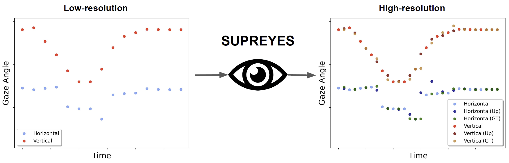

SUPREYES: SUPer Resolution for EYES Using Implicit Neural Representation Learning
Chuhan Jiao, Zhiming Hu, Mihai Bâce, Andreas Bulling
Proceedings of the ACM Symposium on User Interface Software and Technology (UIST), 2023: 1-13.

Abstract
We introduce SUPREYES – a novel self-supervised method to increase the spatio-temporal resolution of gaze data recorded using low(er)-resolution eye trackers. Despite continuing advances in eye tracking technology, the vast majority of current eye trackers – particularly mobile ones and those integrated into mobile devices – suffer from low-resolution gaze data, thus fundamentally limiting their practical usefulness. SUPREYES learns a continuous implicit neural representation from low-resolution gaze data to up-sample the gaze data to arbitrary resolutions. We compare our method with commonly used interpolation methods on arbitrary scale super-resolution and demonstrate that SUPREYES outperforms these baselines by a significant margin. We also test on the sample downstream task of gaze-based user identification and show that our method improves the performance of original low-resolution gaze data and outperforms other baselines. These results are promising as they open up a new direction for increasing eye tracking fidelity as well as enabling new gaze-based applications without the need for new eye tracking equipment.Links
Paper: paper.pdf
BibTeX
@inproceedings{jiao23supreyes,
author = {Jiao, Chuhan and Hu, Zhiming and B{\^a}ce, Mihai and Bulling, Andreas},
title = {SUPREYES: SUPer Resolution for EYES Using Implicit Neural Representation Learning},
booktitle = {Proceedings of the ACM Symposium on User Interface Software and Technology},
year = {2023},
pages = {1--13},
doi = {10.1145/3586183.3606780}}